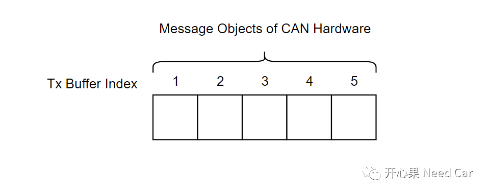
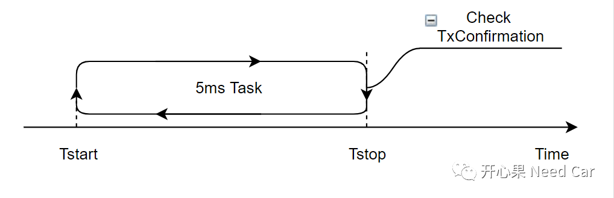
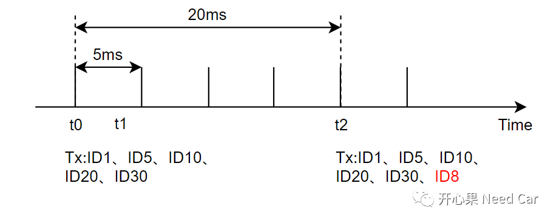
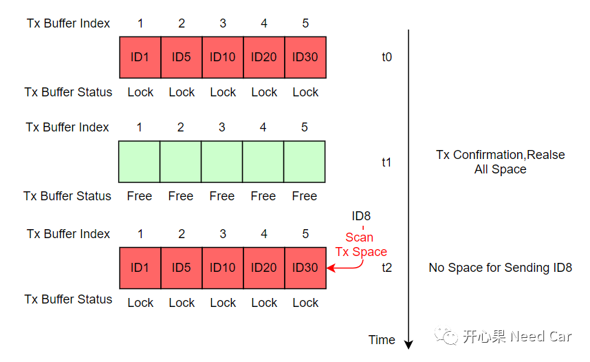

开心果 Need Car · 2022-06-26T10:30:00+08:00 · 微信原文
实际工程项目中，使用Polling方式还是Interrupt方式，我们会结合硬件资源评估，如果在未做资源评估的前提下，使用Polling方式，可能会带来意想不到的结果，比如：丢帧问题。
提示：本文基于CAN报文发送讨论
在之前的文章中，已经提到过发送请求和发送确认的问题，可以参考前文Autosar通信栈：发送返回OK和发送确认是一回事吗。
发送请求（Request）：上层请求发送某个CAN报文，先检查底层是否有空闲的硬件缓存区，如果底层有空闲缓存区，则将待发送的数据放入底层硬件缓存区（RAM），等待发送，同时将此发送报文占用的硬件空间"上锁"（Lock），表示此位置不能再存放其他发送报文，直到此空间被释放（Free）。待发送CAN报文成功放入底层硬件缓存区以后，即：发送请求成功，返回E_OK状态。如果底层没有可用的硬件缓存区，则直接返回E_BUSY，发送请求失败，这也是造成发送丢帧的原因。



为什么会存在发送CAN报文的丢帧呢？如下图：

t0时刻，ID1、ID5、ID10、ID20、ID30均请求发送，此时，底层硬件缓存区空间够用，可以将这些发送报文缓存到底层硬件缓存区，同时将报文所占用的空间锁住（Lock）；
t1时刻，Polling方式检查ID1、ID5、ID10、ID20、ID30的发送情况，如果均成功发送到CAN总线，则释放（Free）ID1、ID5、ID10、ID20、ID30占用的空间。由于空间已经释放，下一个周期（5ms以后），ID1、ID5、ID10、ID20、ID30再次请求发送...
t2时刻，ID1、ID5、ID10、ID20、ID30、ID8均请求发送，由于发送请求的数量＞底层硬件缓存区，导致ID8发送请求失败（也可能是其他ID请求失败，取决于发送请求的顺序），没有可用的缓存区存放ID8数据，导致ID8发送丢帧。
相对于Polling方式，Interrupt释放缓存区的速度要快得多，每发送成功一个CAN报文，都会进入中断发送完成例程，通知上层（Confirmation）的同时释放缓存区。
拓展思考
1、使用Polling方式如何更快地释放缓存区，降低丢帧问题呢？增加Polling的频率，比如：将Polling的检测周期由5ms切换到2ms。
2、发送/接收都使用Interrupt方式不好吗？前面聊过，硬件资源够的前提下，尽可能地使用Polling方式。因为使用Interrupt方式，会有过多的时间耗费在上下文切换上，可以参考前文上下文(CSA)切换，需要花费多少时间？。
往期精彩回顾